🌱 第一次用：照著做 10 步
從來沒用過也沒關係，紅框就是要按的地方1第一次打開工作台
用 Chrome 或 Edge 打開工作台網址（安裝教學第 1 級有網址）。第一次是空的，沒關係。先認得右上角三顆：①⚙ 設定、②＋ 新增任務、③📖 使用說明（忘記怎麼用就按它，這本手冊也在裡面）。
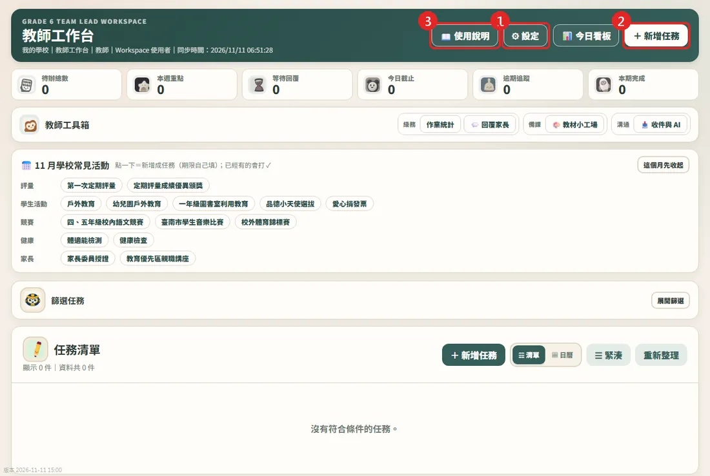
2認識畫面的五個區塊
由上往下：①上方按鈕 → ②任務摘要（今天幾件、逾期幾件）→ ③教師工具箱（所有工具都在這）→ ④本月學校活動 → ⑤任務清單。

3填自己的資料
按 ⚙ 設定：①「教師資料」填職稱、年級、班級；②要用 AI 再到「AI 設定」；③要用 LINE 再到「LINE 小幫手」；最後一定要按 ④儲存設定。

4（要用 AI 才做）貼上 Gemini 金鑰
在「AI 設定」：①勾「開啟 AI 功能」→ ②貼上金鑰 → ③模型選「自動（建議）」→ ④按「✓ 測試金鑰」，看到 ✅ 再儲存。金鑰怎麼申請看安裝教學第 3 級。

5建立第一件任務
按 ＋ 新增任務：①打任務名稱（動詞開頭）→ ②選工作主軸 → ③選截止日期 → ④儲存任務。做完後在清單按「完成」。
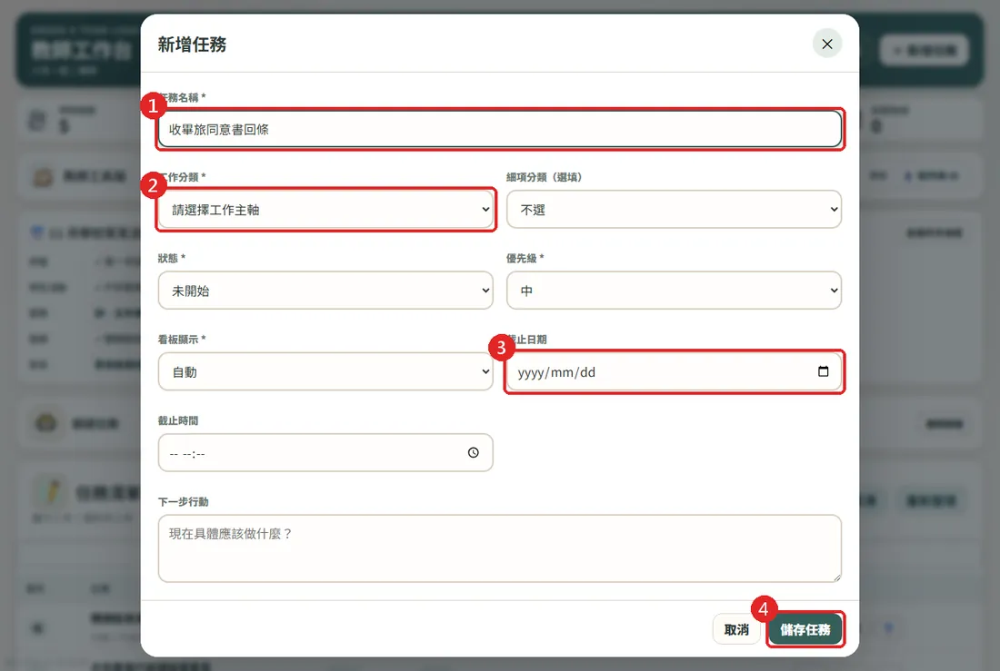
6打開工具箱
教師工具箱的按鈕按一下就打開，再按一次收起：①作業統計、②回覆家長、③教材工作坊（另開新分頁）、④收件與 AI（小助手記事、AI 行政助理）。
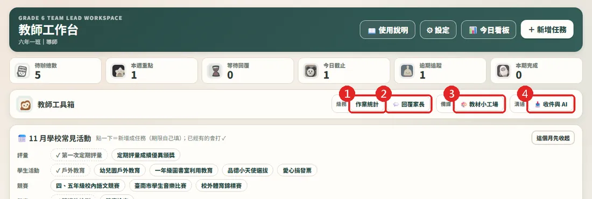
7（要用 AI 才做）讓 AI 整理公文
在「📥 收件與 AI」選 ①AI 行政助理 → ②把公文貼進去 → ③按「分析並給建議」，下面就會列出每一件事讓你選任務／記事／不要。
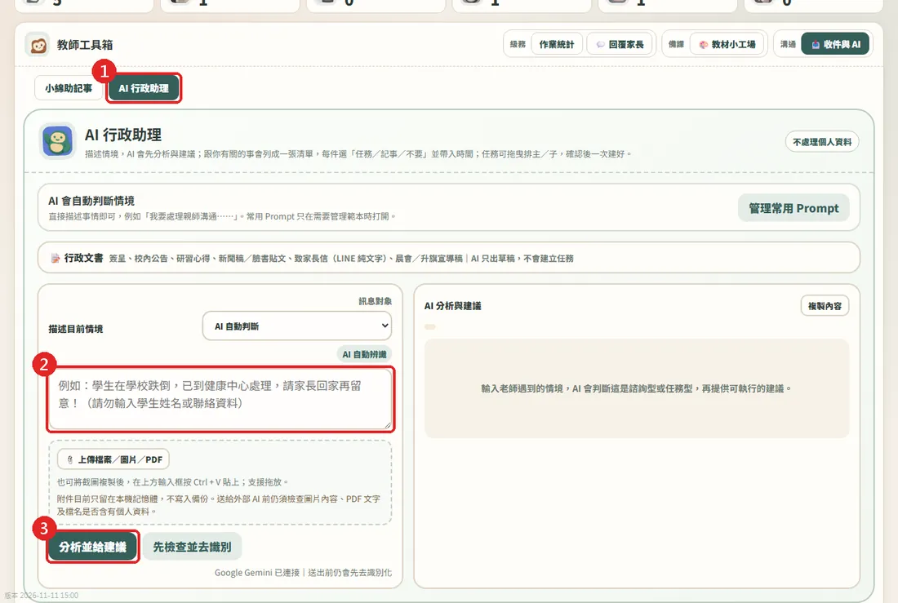
8教室電腦打開晨間大屏
教室電腦打開晨間大屏，學生到校點 ①點名；②作業繳交、③作業訂正 收作業；第一次先到 ④設定 填班級和座號數（預設密碼 1234）。
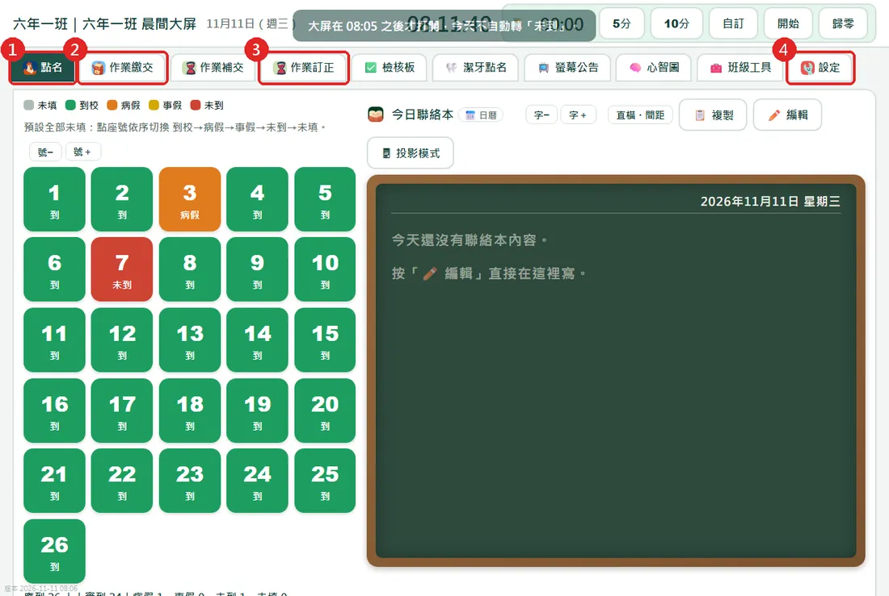
9回到工作台看今日看板
工作台按 📊 今日看板：①上排數字、②座位出缺、③每份作業交了幾份；看完按 ④「↩ 回工作台」。
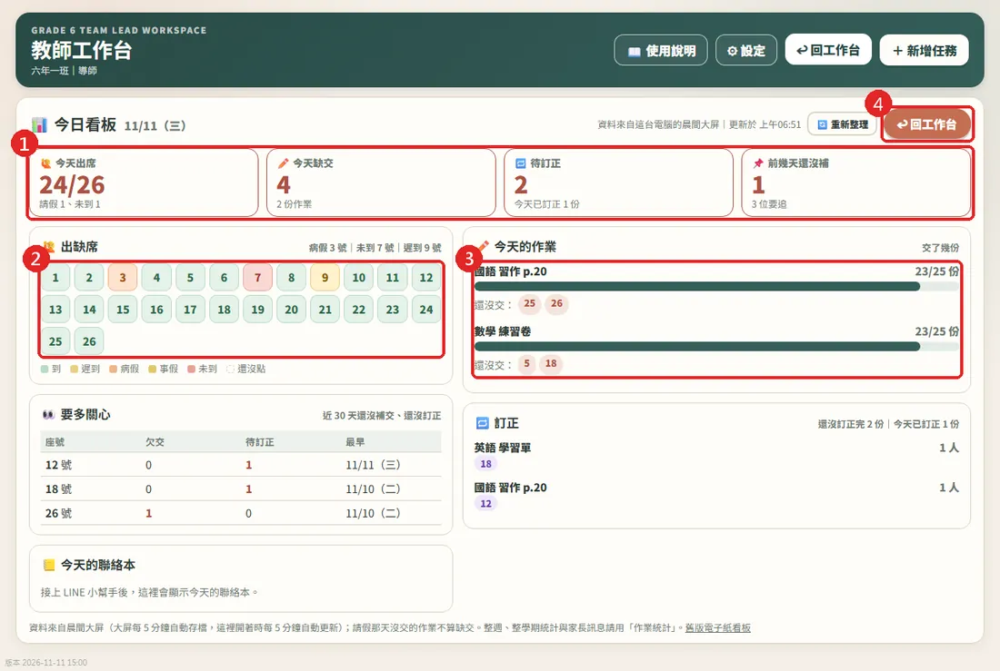
10備課：教材工作坊
工具箱按 🎨 教材工作坊：①上方選工具 → ②打主題（下面有本月學校活動可以點）→ ③要照課本出就放照片／PDF／Word → ④按生成。欄位空著時按 Tab 會帶入範例。
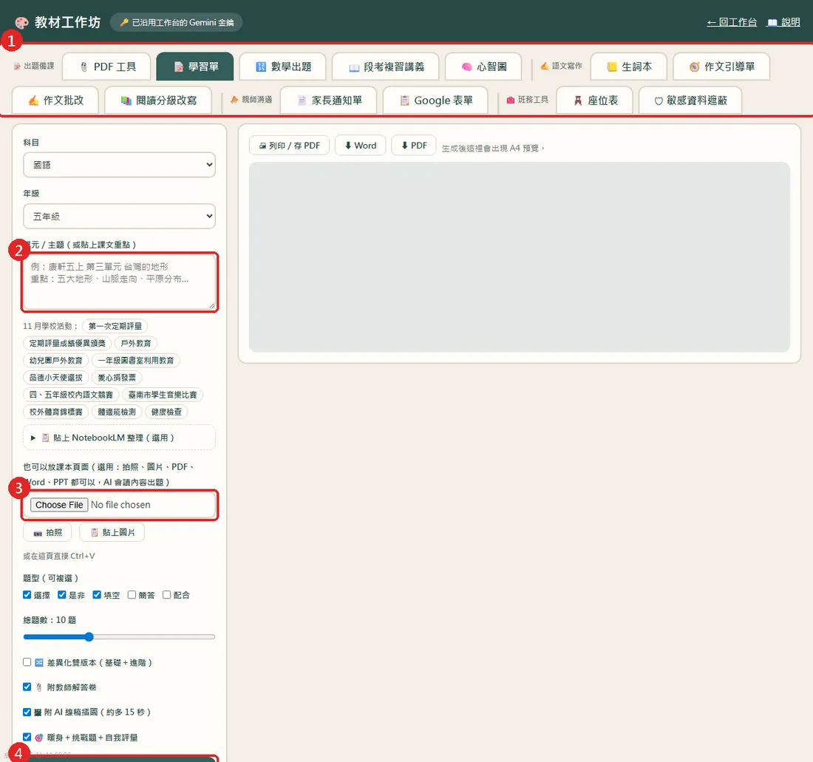
一、教師工作台
老師自己的電腦：任務、親師溝通、AI 助理1. 工作台畫面總覽
打開 教師工作台 就會看到這個畫面，由上往下分成五塊。
- 最上面按鈕：📖 使用說明、⚙ 設定、📊 今日看板、＋ 新增任務。
- 任務摘要：待辦總數、本週重點、今日截止、逾期追蹤，一眼看完。
- 教師工具箱：分三組——級務（聯絡本、作業統計、💬 回覆家長）、備課（🎨 教材工作坊）、溝通（📥 收件與 AI、📂 雲端資料夾）。按一下打開，再按一次收起。
- 📅 本月學校常見活動：這個月學校常有的活動，點一下就變任務。
- 任務清單：可切換清單／日曆；拖曳任務可排主任務、子任務。
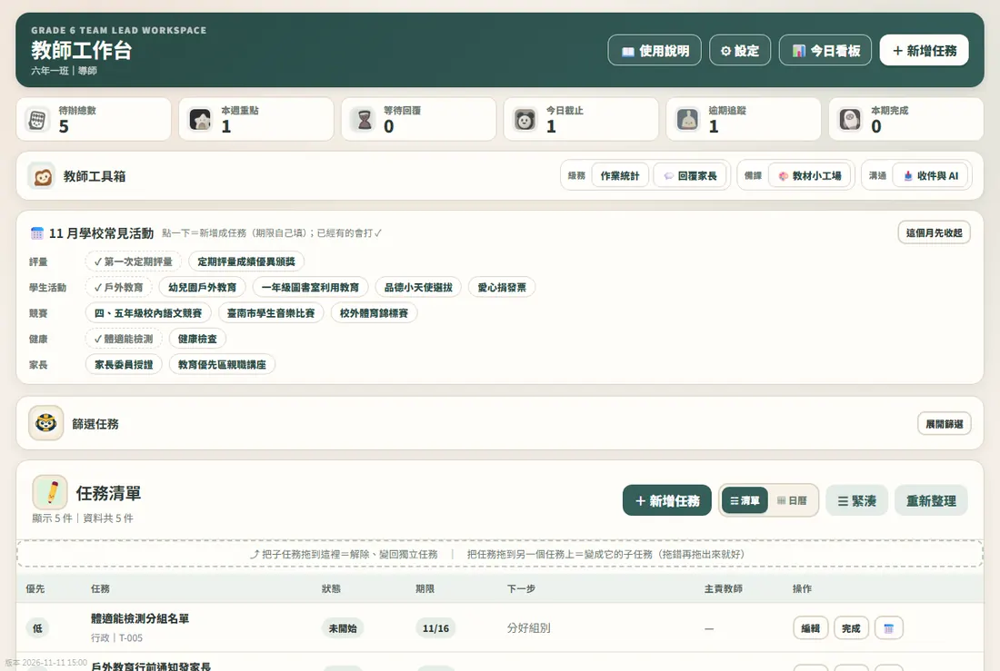
2. 新增一件任務
什麼時候用：主任交辦、要繳的表、要聯絡的事——有期限、要動手做的事。
- 按右上角 ＋ 新增任務。
- 填 任務名稱（用動詞開頭，例如「收畢旅同意書回條」）。
- 選 工作主軸、優先順序，填 截止日期（時間可不填）。
- 按 儲存任務。完成後在清單按 完成。
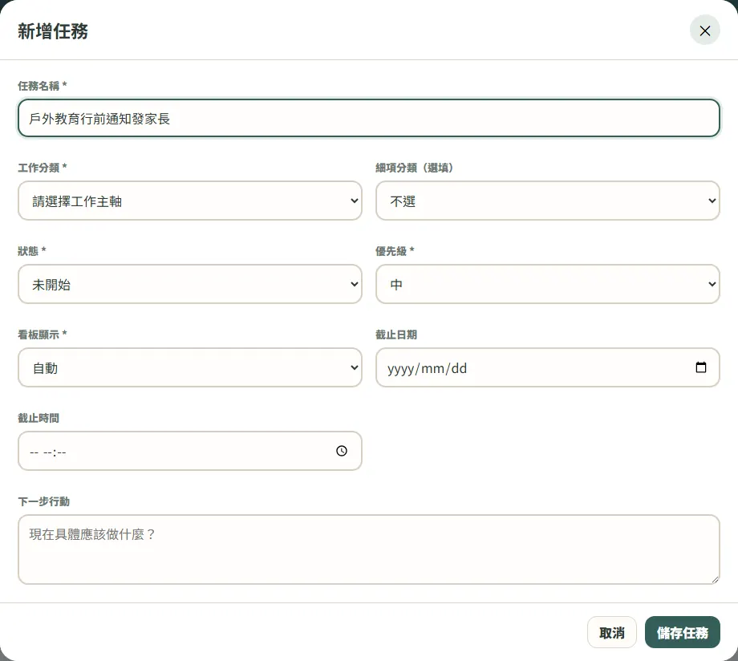
2-1. 任務清單的日曆模式
什麼時候用：想看這週、這個月哪幾天比較忙；要改期直接拖。
- 任務清單右上按 日曆，任務依截止日排在日曆上（逾期的標紅）。
- 把任務拖到別天就改期；點任務看詳細內容。按 清單 回到列表。
- 接上大屏後，日曆上也會標每天的出缺與缺交（例如「🙋缺2｜✏缺交3」）。
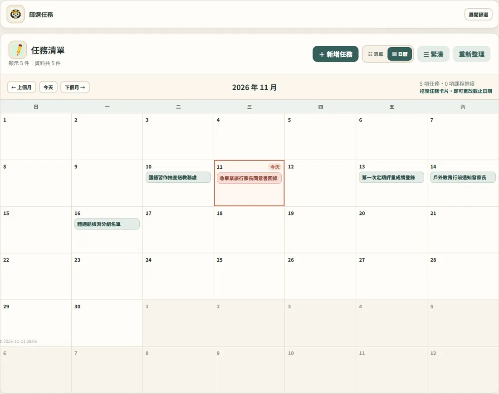
2-2. 聯絡本（在家寫好，教室黑板自動顯示）
什麼時候用：前一晚或下課空檔寫明天的聯絡本。需要接上 LINE 小幫手（安裝第 2 級）。
- 工具箱 聯絡本，上方選日期（‹ › 換天）。
- 用下拉選單快速輸入常用項目（作業、考試、攜帶物品），或直接打字；右邊即時顯示黑板的樣子。
- 可調直式／橫式、字距、行距、字型；按 儲存到雲端，教室大屏當天就顯示。
- 按 📅 日曆 一次看整個月，點哪天改哪天；下週的也能先排好。


3. 📊 今日看板：今天班上一眼看完
什麼時候用：早上第一節前、下課空檔，想知道誰沒來、誰沒交、誰還沒訂正。
- 按最上面的 📊 今日看板，畫面切換成看板。
- 上排四個數字：今天出席、今天缺交、待訂正、前幾天還沒補，紅框＝有狀況。
- 左邊：座位出缺圖（顏色＝到／遲到／病假／事假／未到）、要多關心的座號、今天的聯絡本。
- 右邊：每份作業交了幾份、誰還沒交，以及訂正名單。
- 看完按橘色的 ↩ 回工作台（右上角也有）回到原本畫面。
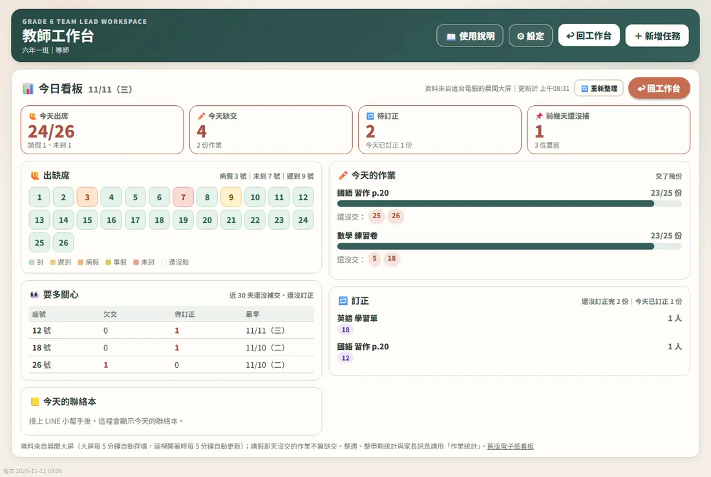
4. 📅 本月學校常見活動
什麼時候用：月初排工作時，提醒自己這個月學校有哪些活動要準備。
- 任務清單上方會依學校行事曆列出本月活動（評量、學生活動、競賽、健康、家長）；20 號以後順便列下個月。
- 點一下活動 → 自動打開「新增任務」並帶入名稱，填期限後儲存。
- 任務清單已經有的活動會打 ✓。不想看到就按 這個月先收起，下個月會再出現。

5. 🤖 AI 行政助理：一份公文整理成任務和記事
什麼時候用：收到學年公告、晨會紀錄、主任的長訊息，不想自己一條一條抄。需要先設定 AI 金鑰。
- 工具箱按 📥 收件與 AI → 上方分頁選 AI 行政助理。
- 把公文文字貼進去（或按 📎 附 PDF、照片、Word），按 AI 分析。不要輸入學生姓名，送出前也會自動遮蔽個資。
- 下面出現 📋 整理成任務／記事：每件事左邊有 任務記事不要，AI 已先選好建議，點一下可以改。
- 任務可直接改日期、時間、優先順序；把一個任務拖到另一個任務上＝變成它的子任務。
- 按 ✅ 確認建立：任務進任務清單、記事存進小助手記事。


6. 📌 小助手記事：只要記得、不用做的事
什麼時候用：「下週一視力複檢」「家長日問卷週五收齊」這種提醒。
- 📥 收件與 AI → 小助手記事。
- 上面打字、選提醒日，按 新增記事；有提醒日的會出現在日曆。
- 後來發現要動手做，按記事旁的 轉為任務。桌面上的小助手也會同步這些記事。

7. 💬 LINE 小幫手：在 LINE 上丟給它就好
什麼時候用：不在電腦前（開會、走廊、通勤），想到一件事就丟給 LINE。需要先完成安裝教學第 4 級。
- 在 LINE 傳一句話給小幫手，例如「週五前收畢旅同意書回條」；也可以傳語音、照片、檔案。
- 小幫手回覆整理好的內容，下面有三個按鈕：✅ 任務📌 記事✖ 不要，AI 建議的那顆會標「（建議）」。
- 按一下就定案；沒按的話 10 分鐘後照 AI 建議。
- 工作台開著時每 5 分鐘自動同步，任務自動進任務清單、記事自動進小助手記事——不用再回電腦確認。
- 傳「撤回」可作廢剛剛那一筆；傳「說明」看全部指令。
要放進工作台的哪裡？AI 建議：任務。沒按就照建議。
8. 📈 作業統計：每週、整學期的缺交與訂正
什麼時候用：週五想發給家長本週作業狀況、期末想看整學期。
- 工具箱 作業統計，選「每週統計」或「本學期累計」，可按 ‹ › 換週。
- 左邊表格是每個座號的還沒交／已補交／待訂正／已訂正。
- 點左邊座號，右邊自動寫好這位家長的訊息；下面還有全班家長訊息（只有總數，不列座號）。按 📋 複製貼到 LINE。
- 要給孩子帶回家：按 🖨 列印聯絡本小紙條（A4 一張 8 格）。

8-1. 點座號就寫好給家長的訊息
在作業統計點左邊表格的座號，右邊「個別家長訊息」就換成那位孩子的狀況（列出還沒交、要訂正的作業與日期）；下面「全班家長訊息」只有總數、不列座號，可以放家長群組。

9. 💬 回覆家長：家長的訊息不知道怎麼回
什麼時候用：家長傳來擔心、抱怨或請託，想回得溫和又清楚。
- 工具箱 💬 回覆家長。
- 貼上家長的話，再寫幾個你想講的重點（口語就好）。
- 選語氣（溫和親切／正式有禮／簡短明確），按 ✍️ 幫我寫回覆。
- 改一改再按複製。有開 AI 會寫得更貼切；沒開 AI 也會用範本幫你組好。

10. 🔑 設定 AI 金鑰（Gemini，免費）
只要設定一次。工作台、教材工作坊、LINE 小幫手、小助手都共用這一把 Gemini 金鑰。
- 到 Google AI Studio 申請 Gemini API 金鑰（詳細圖解在安裝教學第 3 級）。
- 工作台 ⚙ 設定 → AI 設定，勾「開啟 AI 功能」，服務選 Google Gemini。
- 貼上金鑰，模型選 自動（建議）。
- 按 ✓ 測試金鑰，看到「✅ 金鑰可以用」再按 儲存設定。

10-1. 其他設定頁一次看
⚙ 設定 左邊每一頁的用途：
- 教師資料：職稱、年級、班級、介面風格（標準／可愛溫暖風）、工作台標題。
- 隱私保護：送 AI 前要自動遮蔽的資料（電話、Email、身分證、地址、學生姓名、自訂敏感字）。
- LINE 小幫手：貼 Apps Script 網址和 🔑C 同步金鑰，按「測試連線」→「立即同步」。
- 備份與還原：下載 JSON 備份、雲端備份；換電腦一鍵還原。
- 小助手：下載桌面小助手、選角色與提醒。


二、🏫 晨間大屏
教室電腦／電子白板：點名、聯絡本、收作業、班級工具、學期出缺席11. 打開大屏，認識畫面
網址：工作台網址後面改成 Morning.html（例：t-borad2026.netlify.app/Morning.html），用教室電腦的 Chrome 或 Edge 打開，按 F11 全螢幕。建議存成書籤，每天早上一按就開。
- ① 上方分頁：點名、作業繳交、作業補交、作業訂正、班級工具、查詢統計、設定。
- ② 倒數：右上角 5分、10分、自訂，一按就跳出大時鐘。
- ③ 座號格：學生到校自己點。
- ④ 黑板：今天的聯絡本，老師可在工作台、LINE 或這裡寫。
- ⑤ 投影模式：只留黑板，字放大給全班看。
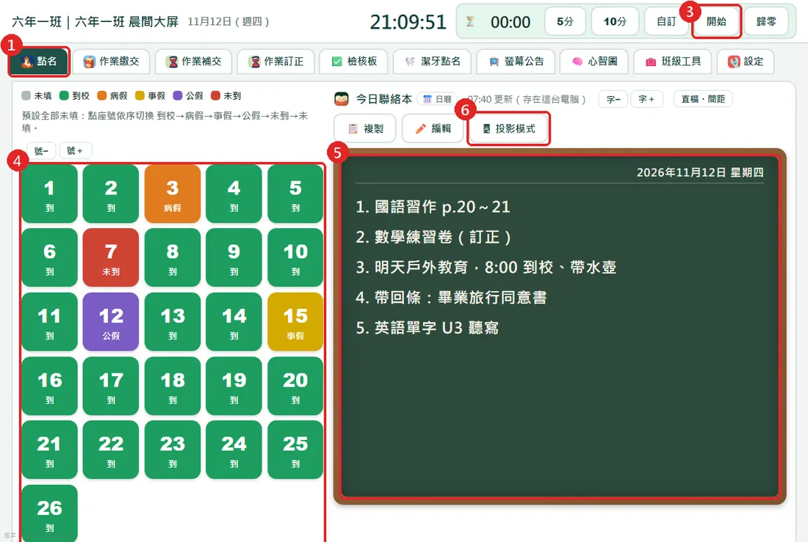
11-1. 大屏第一次設定（預設密碼 1234）
- 上方按 設定，輸入密碼（預設 1234，請改成只有你知道的，學生才不會亂改）。每一類用不同顏色的標題區分，點標題可以收起或展開。
- 班級資料：班級名稱、最大座號、空號（沒有人的座號）。
- 大屏外觀：標題、聯絡本字體（低年級可選注音體）、大屏風格、「待訂正」顏色。
- 科目與作業：點亮要收的科目和常用作業項目。
- 點名與補交：遲到界線（幾點後點到校算遲到）、幾點還沒點的自動記未到。
- 🔔 本校作息時間：預設一般國小作息（第一節 08:40～09:20…），照貴校的上下課時間改就好；大屏提示的「每節下課」、定評小幫手的節次時間都會跟著用。
- 資料要存在哪裡：只存這台電腦，或存到雲端（要在家寫聯絡本、在工作台看統計才選雲端）。最後按 儲存設定。
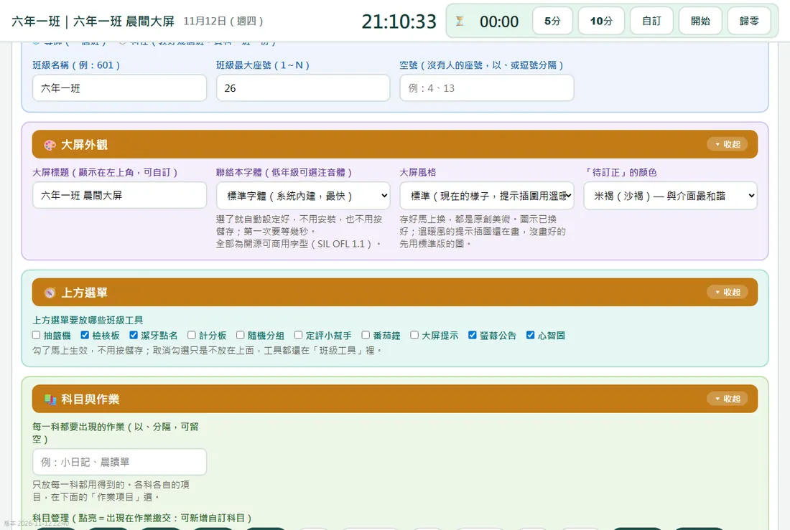
11-2. 點名（學生自己點）
什麼時候用：早自習。學生到校點自己的座號，老師不用唱名。
- 點一下座號＝到校（綠色）。超過遲到界線才點，系統記遲到（畫面仍顯示到，統計會分開算）。
- 請假的再點：病假（橘）→ 事假（黃）→ 公假（紫）→ 未到（紅）→ 回到未填。
- 到了「自動缺席」時間還沒點的，自動變未到。
- 上方一行會即時顯示：應到、實到、病假、事假、公假、未到、未填幾人。
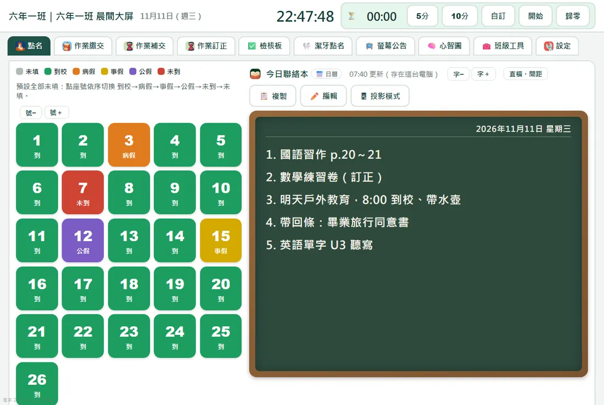
11-3. 聯絡本黑板：直接在大屏寫
- 黑板上方按 ✏️ 編輯，直接打字，一行一項。
- 不想打字：用快速輸入選科目和項目（例：國語 → 習作），補充頁數後按 ＋ 加入。
- 寫好按 💾 儲存。接雲端時，工作台和 LINE 寫的聯絡本也會自動出現在這裡。
- 字體、直書／橫書、字距行距都可以在黑板上方調。
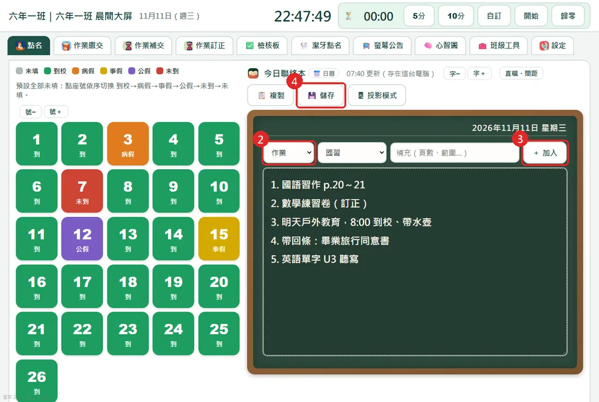
11-4. 聯絡本日曆與投影模式
- 📅 日曆：看整個月每天寫了什麼，點日期看內容，📋 複製這天 可以拿來改。
- 🖥 投影模式：只留黑板、字放大，學生抄聯絡本最清楚；按 Esc 回來。
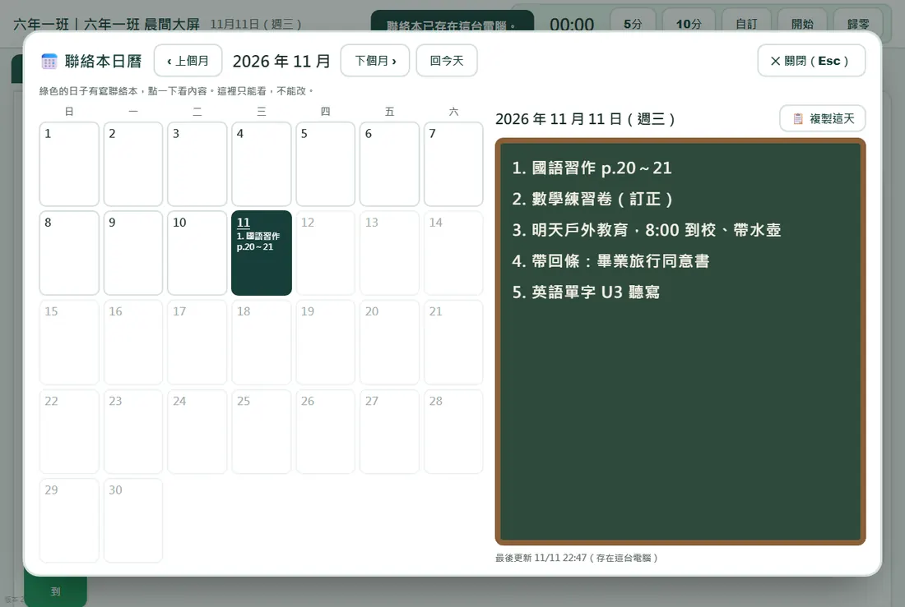
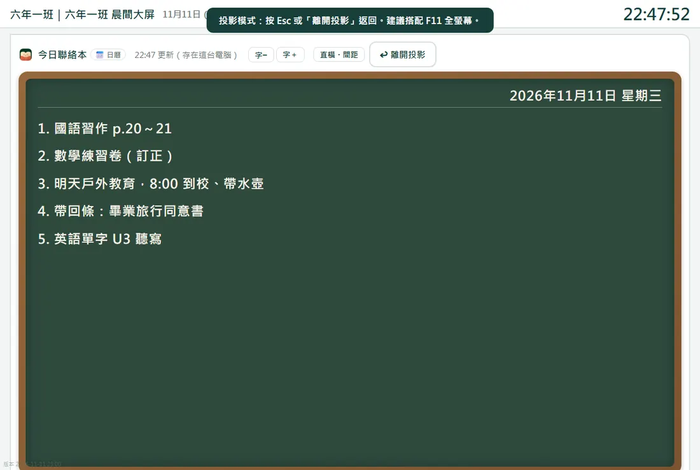
12. 作業繳交、訂正、補交
- 作業繳交分頁：① 選科目 → ② 選作業（可補充頁數）→ ③ ＋ 新增收件版面。
- ④ 交了的座號點一下變色；沒點的就是缺交。請假（病假、事假、公假）那天沒交不算缺交。
- 要訂正的再點一次變待訂正；作業訂正分頁裡，改完再點＝訂正完成。
- 作業補交分頁：前幾天沒交、還沒訂正完的，學生補了就點掉。
- 下方「今日統計（分科）」自動算每份作業交了幾份。
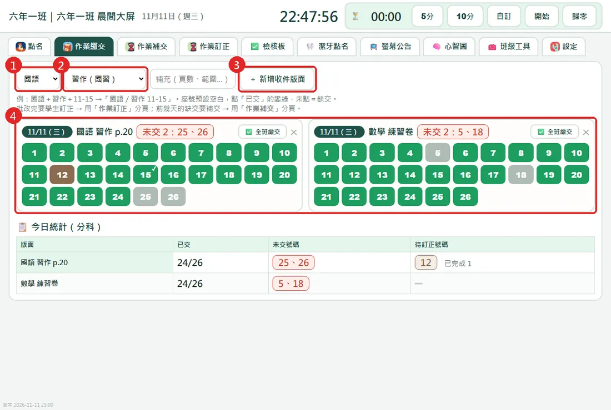


12-1. 📊 學期出缺席與潔牙統計（轉入轉出、公假、放假、匯出）
什麼時候用：學期末要填出缺席、家長問孩子請了幾天假、學生半途轉入或轉學。只用座號。
- 在哪裡看：大屏只存這台電腦→ 大屏 設定 → 📊 學期出缺席統計（有密碼，學生看不到）。大屏存到雲端→ 工作台 教師工具箱 → 出缺席統計（換電腦也看得到）。
- 表格每位學生：應到天數、出席（遲到算出席）、遲到、病假、事假、公假、未到。有紅字的就是有請假或缺席。
- 潔牙：有用班級工具的 🦷 潔牙點名，表格會多出應潔牙、已潔牙、潔牙率。請假、未到、放假、不在籍的日子不算應潔牙。
- 上課日＝那天有開大屏點名。學期起訖可以改（預設：8 月～1 月上學期、2～7 月下學期）。
- ⬇ 匯出 Excel、⬇ 匯出 Word：直接下載。Excel 第二頁是每天上課或放假，第三頁是請假明細（日期、座號、假別）。
- 那一天誰請什麼假：打開 📅 每天請假明細；或點表格裡的座號，看他哪幾天請什麼假。
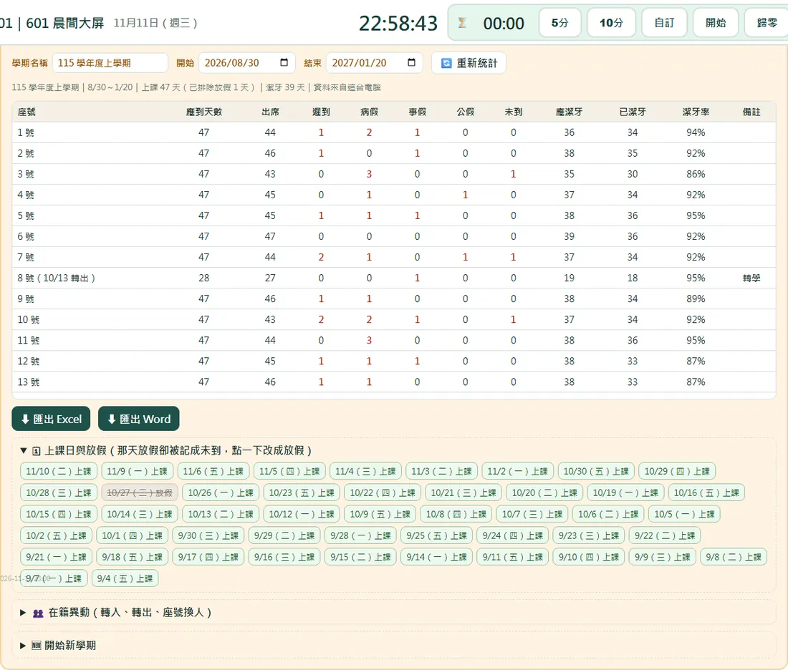
- 那天其實放假：打開 🗓 上課日與放假，點那天的日期 → 變成「放假」，那天整天不算（再點一次改回上課）。
- 學生轉入、轉學：打開 👥 在籍異動 → ＋ 新增一列，填座號和轉入日或轉出日。不在班上的日子不算應到、也不算缺席。同一個座號換了人就填兩列。
- 新學期：學期初打開 🆕 開始新學期 按一次，放假日與異動清空重來；舊的點名紀錄不會刪。
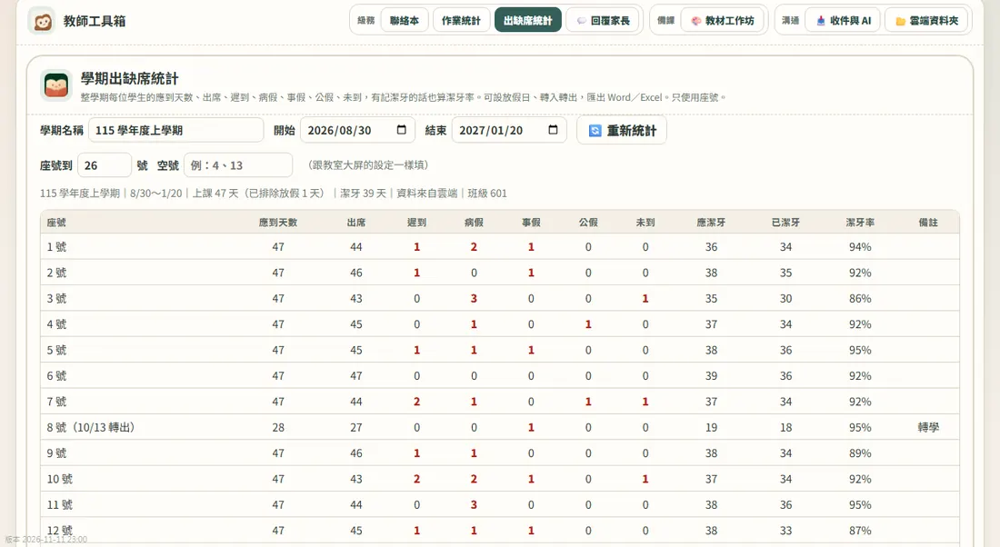
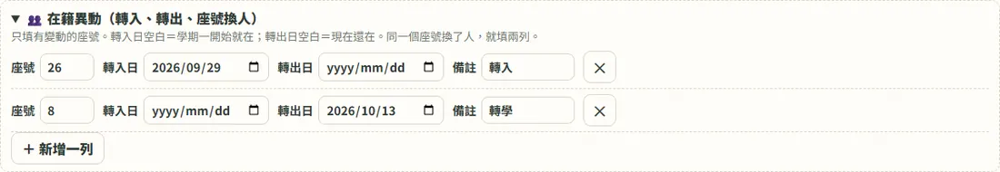
13. 班級工具
- 班級工具分頁有：抽籤機、檢核板、潔牙點名、計分板、隨機分組、定評小幫手、番茄鐘、📣 大屏提示、螢幕公告、心智圖。
- 抽籤機：有轉盤、扭蛋機、抓娃娃機三種玩法；勾 排除今日缺席，請假、公假、未到的不會被抽到。
- 常用的工具可以在設定的「上方選單」勾選，放到最上面一按就開。
- 每個工具都有 ⛶ 投影模式／全螢幕，按 Esc 回來。
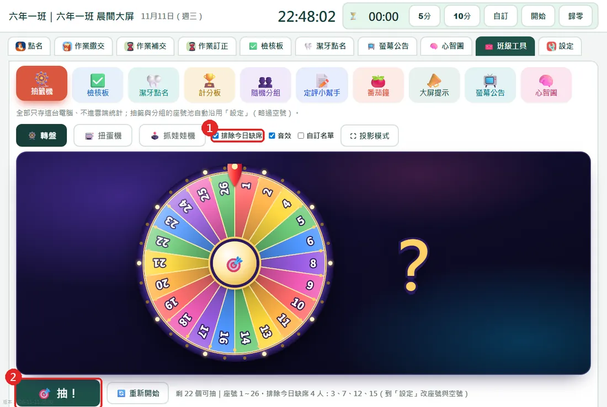


13-1. 🏆 計分板：小組、個人、兌換禮物
- 班級工具 → 🏆 計分板，上方選 👥 小組 或 🙋 個人。
- 小組：每組按 ＋1、＋5、−；組名直接點著改；組數 2～8 組。
- 自己編組：按 ✏️ 編組，三種方法都可以—— ① 把號碼拖到組裡（觸控白板也能拖）；② 點一下號碼、再點一組；③ 在組旁邊打號碼（例：3 5 8）按「放入」。 也可以按「🎲 隨機分」（打亂、人數平均）或「照座號平均分」一次分好；隨機分組工具分完也可以按 🏆 帶到計分板。
- 個人：每個座號一格，點一下就加分（上面可選 ＋1／＋2／＋5／−1），前三名有獎牌；格子左邊的顏色是他在哪一組。
- 小組加分也加給組員（預設打勾）：第一組＋1，第一組每個人的個人分也＋1。不想分給組員就取消勾選。
- 分數只會從小組分給組員；點個人加分不會加到小組上。分數一直保留，按「全部歸零」才歸零（會先問一次）。
- 🎁 兌換：先點座號，再點禮物，扣點數換禮物（會先問一次；點數不夠的禮物會寫「還差幾點」）。按 ✏️ 管理禮物 可以改名稱、要幾點、新增或刪除。換錯了在「📜 兌換紀錄」按「退還」。
- 組名可以自己取：點小組卡上的組名（或旁邊的 ✏️）直接打字，或在「✏️ 編組」裡改。
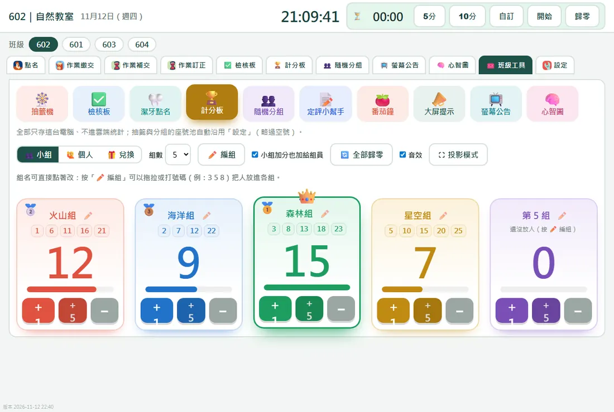
13-2. 👩🏫 科任老師：一台大屏切換好幾班
什麼時候用：自然、英語、電腦、音樂等科任老師，在專科教室教好幾個班。每一班的資料各自分開：座號、點名、作業、抽籤、分組、計分板、潔牙、學期統計。
- 大屏 設定 → 班級資料 → 使用方式 選 科任（教好幾個班）。
- 「我教的班級」填 601、602、603（用、或逗號分隔），按 儲存設定。
- 大屏上方出現 班級按鈕，學生進教室就點那一班，畫面換成那班的資料（約 1 秒）。
- 每班第一次切過去時，到「設定」填那班的座號數、空號。
- 科任模式不顯示聯絡本（聯絡本是導師的），也預設不用潔牙（上方選單不放、統計不算潔牙）。想換回來，使用方式改回「導師」就好，各班資料都還在。
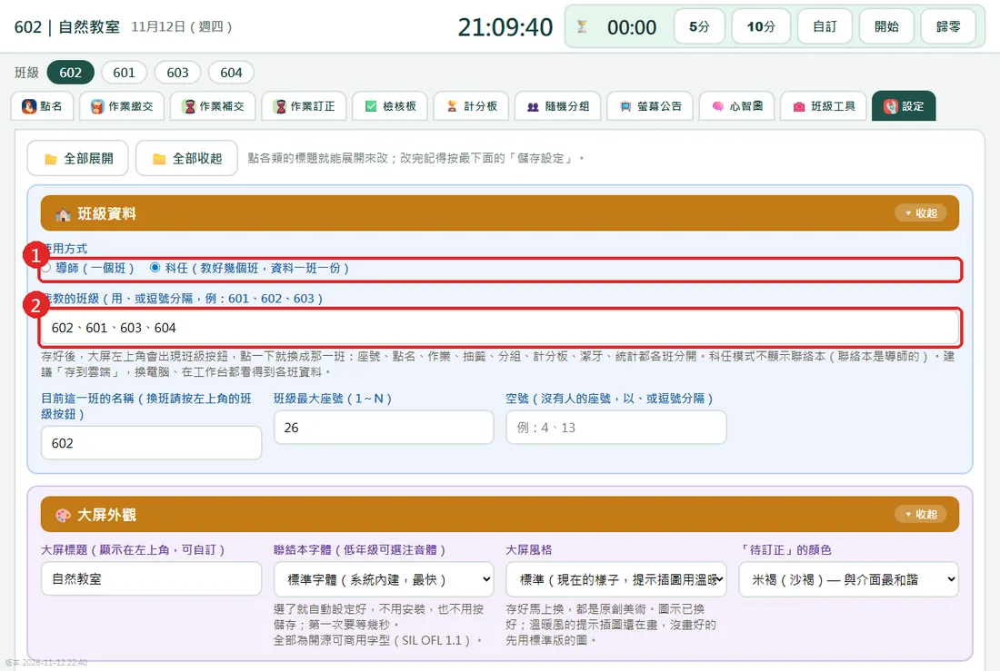
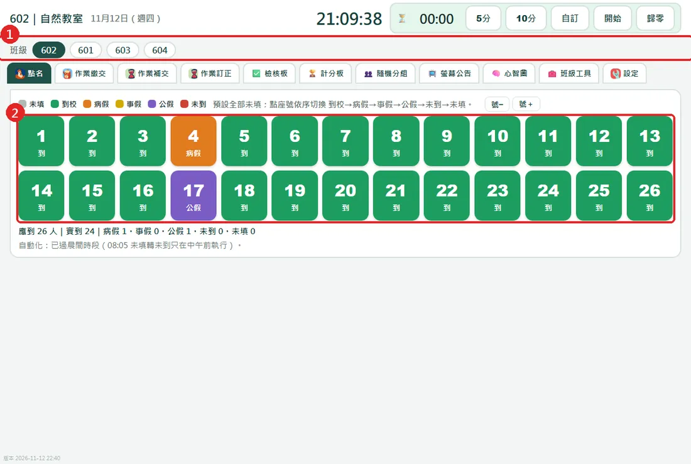
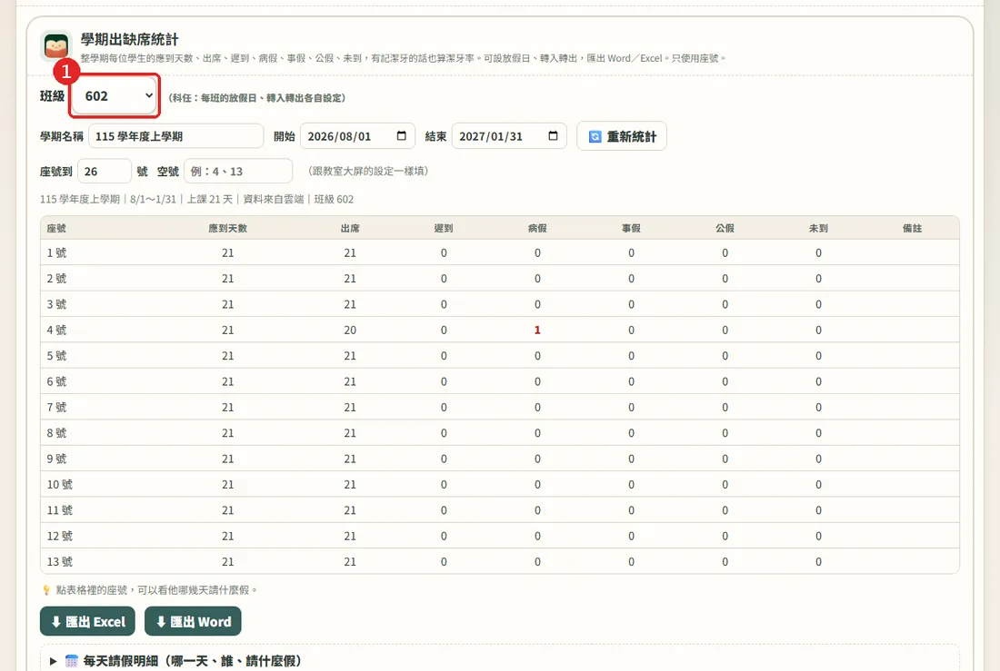
13-3. 倒數計時、大屏提示、定期評量
- 倒數：右上角 5分、10分 一按就開始，大時鐘蓋在畫面上；可 −1 分、＋1 分、暫停、縮小。
- 📣 大屏提示：選一句（例「上課囉！眼睛看老師」）全螢幕顯示。打開 ⏰ 定時自動跳出，在要用的那一列勾「啟用」：「每節下課」會照設定 → 本校作息時間自動算出下課時間（也可以自己改），到時間自動跳出「下課先喝水、上廁所」等提示，時間到自己收起；「指定時間」可以填 12:35 這種固定時間。教室電腦要開著大屏網頁才會跳。
- 📝 定評小幫手：考試日總覽顯示每節考什麼；單節時鐘可 從點名帶入 應到、實到、未到人數。
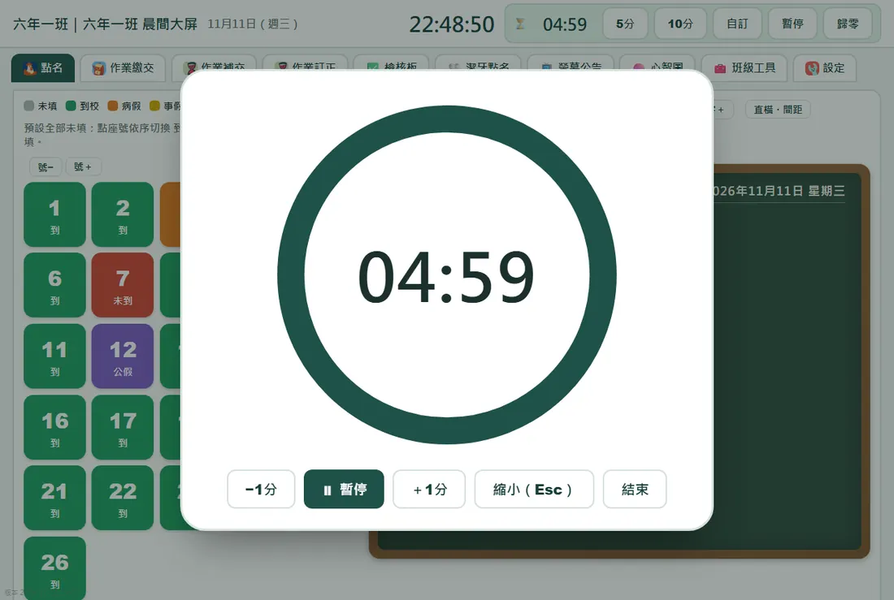

13-4. 大屏風格：標準／可愛溫暖風
三、🎨 教材工作坊
備課：學習單、出題、作文、通知單、PDF、個資遮蔽14. 學習單（可放課本 PDF、Word、照片）
- 工作台工具箱按 🎨 教材工作坊，上方選 📝 學習單。
- 選科目、年級，打單元或主題；主題下面有本月學校活動按鈕，點一下就帶入。
- 要照課本出：在「也可以放課本頁面」放拍照、圖片、PDF、Word、PPT都可以。
- 勾題型、題數，按生成。右邊預覽可直接改，再 🖨 列印、⬇ Word 或 ⬇ PDF。

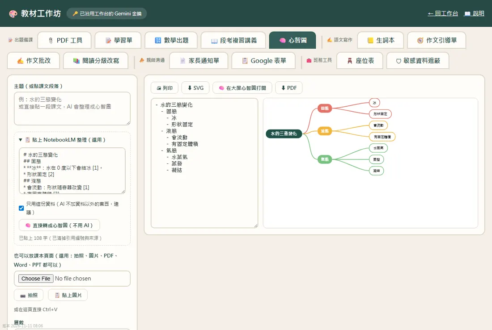
15. 數學出題（不用 AI，題目都驗算過）
- 選 🔢 數學出題，選年級和題型（照 108 課綱分年級）。
- 按 🎲 產生題目，每按一次換一組數字；最後一頁是答案卷。
- 想照課本出類似題：上傳課本頁面，按「照課本出類似題」（這個用 AI）。

16. 作文引導單
- 🧭 作文引導單：填作文主題，再在 內容簡述寫這次的經驗（例如去了哪裡、看到什麼），AI 會照你的經驗設計審題、心智圖、段落鷹架和好詞。
- AI 生成後右邊可直接改字，再列印或下載 Word／PDF。

17. 🛡 敏感資料遮蔽（Word、Excel、PPT、圖片）
什麼時候用：要把帳密表、學生名單、通知單給別人前，先把個資遮掉。全部在你的電腦處理，不會上傳。
- 選 🛡 敏感資料遮蔽。
- 勾要遮的項目：身分證、手機、市話、Email、生日、地址、帳號密碼、姓名（座位表名單＋你自己填的名字）。
- 放進 Word／Excel／PowerPoint／txt／csv，自動遮好後按 ⬇ 下載遮蔽後的檔案（同一種檔案，檔名加「_已遮蔽」）。
- 表格標題寫「密碼」「生日」「電話」「姓名」的那一欄會整欄遮。圖片則在右邊框選要遮的地方。

18. 📎 PDF 工具
- 選 📎 PDF 工具，把 PDF 或圖片拖進來，每一頁都會列出來。
- 每頁可以轉向、刪除、拖曳換順序。
- 輸出成 PDF、圖片或 Word；下面「常用加工」還有拆頁、壓縮、一頁多張、加頁碼、浮水印、裁切。
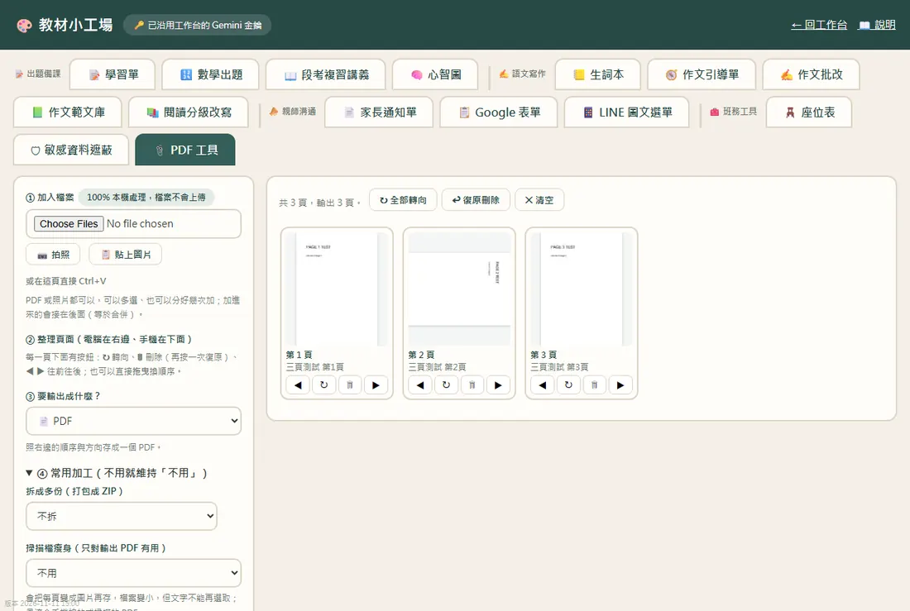
19. 📄 家長通知單
- 選 📄 家長通知單，填發文單位（會記住）。
- 主旨下面有本月學校活動，點「戶外教育」主旨就變「戶外教育活動通知」。
- 內容要點用口語寫（時間、地點、費用、要帶什麼），或放上級來文（照片、PDF、Word）。
- 按生成，AI 寫成正式通知單，附回條；列印或下載 Word。

20. 教材工作坊其他分頁
- 📖 段考複習講義：選科目、年級，貼範圍或放課本（也可貼 NotebookLM 整理）→ 重點整理＋自我檢核題。
- 🧠 心智圖：打主題或貼一段課文，AI 整理成心智圖，可直接送到大屏的心智圖打開。貼上 NotebookLM 的學習指南，按 🧠 直接轉成心智圖（不用 AI），照原本的標題層次馬上畫好。
- 📒 生詞本：貼一串字，自動查注音、部首、筆畫，做成生詞練習。也可以貼 NotebookLM 的生字清單（「晨：早晨」一行一個），按 🔤 抓出生字 自動放進生字欄。
- ✍️ 作文批改：拍手寫作文或放 PDF，依年段規準批改，附段落修改指引與評語。
- 📚 閱讀分級改寫：一鍵找兒童適讀的新聞，做成中文或英文三種難度的閱讀單。
- 📋 Google 表單：一句話說要調查什麼，AI 擬題，建好表單。
- 🪑 座位表：貼名單一鍵排、可拖拉換位。


四、大屏的獨立頁面
心智圖、螢幕公告也能單獨開- 心智圖（MindMap.html）：8 種圖型（心智圖、泡泡圖、樹狀圖…），可存在這台電腦、匯出圖片。
- 螢幕公告（Screen.html）：白板式公告，有書籤、QR Code、畫筆、倒數計時。
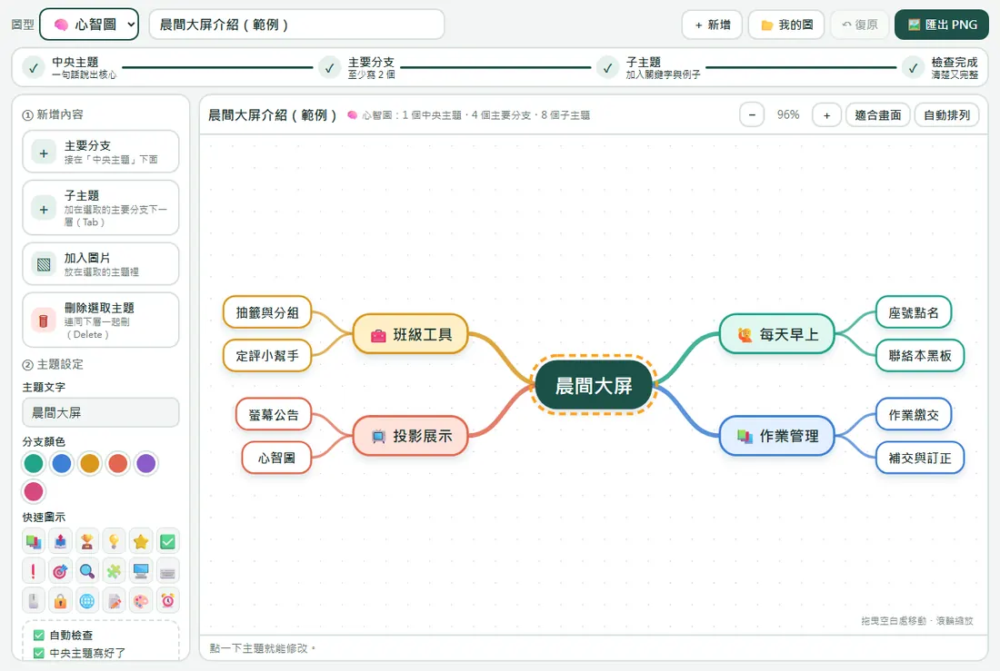
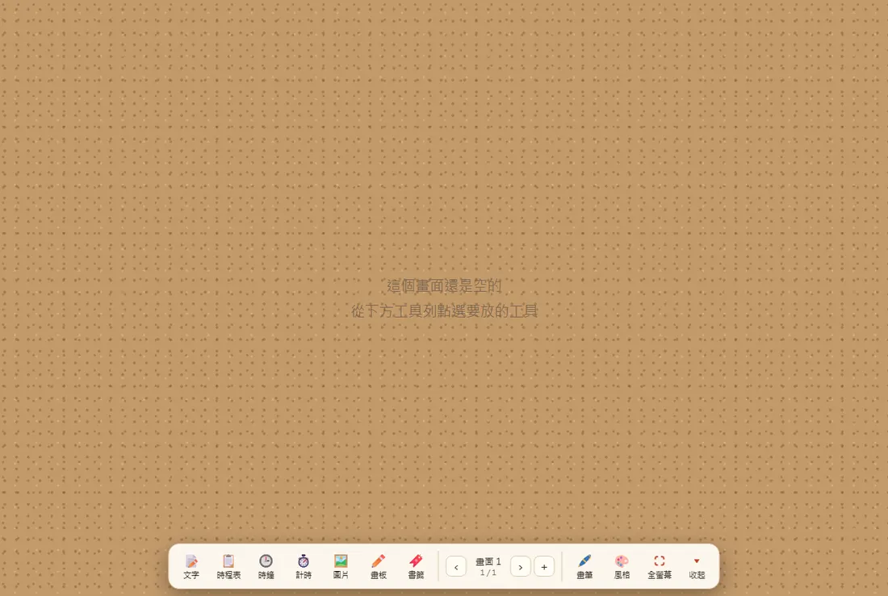
五、常見問題
遇到狀況先看這裡- AI 回「今天的免費額度用完了」怎麼辦？
- Gemini 免費版每天有次數上限，系統會自動換其他模型；全部用完就明天再試，或在 AI 設定換一把金鑰。
- LINE 傳的事沒有出現在工作台？
- 工作台要開著才會同步（每 5 分鐘一次），也可以到 ⚙ 設定 → LINE 小幫手按「立即同步」。沒按按鈕的事要等 10 分鐘才照 AI 建議帶入。
- LINE 回覆沒有［任務］［記事］［不要］按鈕？
- LINE 小幫手程式是舊版。到 Apps Script 貼上新版 LineBot.gs，再按「管理部署 → 新版本」（見安裝教學第 4 級）。對小幫手傳「版本」可看目前版本。
- 今日看板顯示「大屏還沒存檔」？
- 教室的晨間大屏要開著，並在設定裡接上雲端；大屏每 5 分鐘自動存一次。如果全班到齊、作業全交，雲端也不會有紀錄。
- 資料存在哪裡？安全嗎？
- 任務和設定存在你自己的瀏覽器；點名、作業、聯絡本存在你自己的 Google 試算表。詳細說明在系統使用方法與資安。